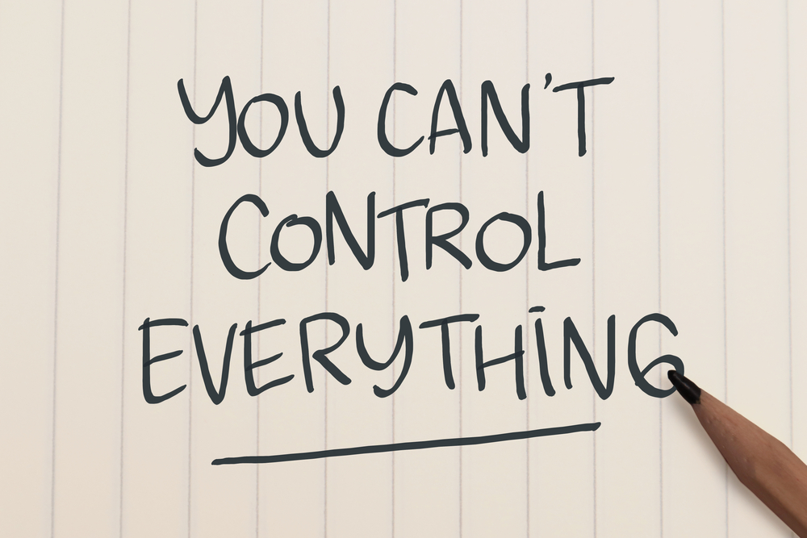

ဘဝပြဿနာ တိုင်းကို ရင်ဆိုင်နိုင်မယ်။ ဖြေရှင်းနိုင်မယ်လို့ တစ်သမတ်တည်း သတ်မှတ်ထားလို့ မရပါဘူး။ တချို့ကိစ္စတွေက ကိုယ်လုပ်လို့ ဖြစ်လာတာလည်းမဟုတ်သလို ကိုယ်တတ်နိုင်တာလည်း မဟုတ်ပါဘူး။ ဒါပေမယ့် သူရဲ့ ဆိုးကျိုးတွေက ကိုယ့်ကို ရိုက်ခတ်လာတယ်။ ဒါနဲ့ ပတ်သက်ပြီးလည်း ဘာမှတုံ့ပြန်လို့ မရတဲ့အခါ အလိုလိုနေရင်း ဒေါသထွက်တာ၊ အားမလိုအားမရဖြစ်တာတွေ ရှိလာပါတယ်။
ဒီလိုမျိုးက ရုပ်ပိုင်းဆိုင်ရာထက် စိတ်ပိုင်းဆိုင်ရာမှာ အများကြီး ထိခိုက်စေပါတယ်။ ကိုယ်တွင်းက ခွန်အားကို ကုန်ခမ်းစေပါတယ်။ အိပ်မပျော်တာ၊ စိတ်တိုစိတ်ဆတ်တာ၊ စိတ်လွတ်ကိုယ်လွတ် ပေါက်ကွဲပစ်လိုက်ချင်တာ စတာတွေကို ခံစားရပါတယ်။ ဒါပေမယ့် ဒီလိုပေါက်ကွဲလို့လည်း မရတဲ့အခါကျတော့ ပိုပြီး ကျိတ်မနိုင် ခဲမရဖြစ်ပြီး တအုံနွေးနွေးနဲ့ ပိုခံစားလာရပါတယ်။
အထူးသဖြင့် လူငယ်တွေမှာပါ။ ရည်မှန်းချက်တွေ၊ အိမ်မက်တွေ အများကြီးရှိတဲ့အတွက် ငါတတ်နိုင်တာ ဒါအကုန်ပဲလား။ ငါက ဘာမှအသုံးမကျတဲ့သူပါလားဆိုပြီး ကိုယ့်ကိုယ်ကို အပြစ်တင်တတ်ပါတယ်။ ဒီလို မကောင်းတဲ့ စိတ်ခံစားချက်တွေကနေ သက်သာစေဖို့ နည်းလမ်းကောင်းလေးတွေ မျှဝေပေးချင်ပါတယ်။
ခုပြောမယ့် နည်းလမ်းတွေက ကိုယ့်ရဲ့ လွင့်နေတဲ့ စိတ်ကို ပြန်လည်စုစည်းစေပြီး လက်ရှိပြဿနာကို အာရုံစိုက်နိုင်ဖို့ ဖြစ်ပါတယ်။ ပြဿနာကို ရင်ဆိုင်လိုက်တာက ပိုပြီး စိတ်မညစ်စေဘူးလားလို့ မေးစရာ ရှိပါတယ်။ တကယ်တော့ ပြဿနာကို အရှိအတိုင်း တည့်တည့်ရှုမြင်လိုက်တာကိုက ပြဿနာကို ကိုင်တွယ်တဲ့ နည်းတစ်ခု ဖြစ်ပါတယ်။
အရင်ဆုံး တိတ်ဆိတ်တဲ့ နေရာမှာ မတ်မတ်ရပ်လိုက်ပါ။ ခန္ဓာကိုယ်အလေးချိန်ကို ခြေချောင်းတွေကနေ ခြေဖနောင့်ကို ရွေ့ပြောင်းလိုက်ပါ။ ခြေချောင်းတွေကို ကော့ကော့ပေးပါ။ ပုခုံးတွေကို ရှေ့မှနောက်၊ နောက်မှ ရှေ့ကို လှည့်ပြီး လျှော့ချလိုက်ပါ။ လက်သီးကို ဆုပ်လိုက် ဖြည်လိုက် လုပ်ပေးပါ။ ဒီ၃မျိုးကို ကိုယ်နှစ်သက်သလောက် လုပ်နိုင်ပါတယ်။ လူ့သဘာဝက စိတ်ရှုပ်စရာတွေ တွေ့လာပြီဆိုရင် ခြေလက်၊ လည်ပင်းက ကြွက်သားတွေကို သိတောင် မသိလိုက်ဘဲ အလိုအလျောက် တင်းလိုက်ပါတယ်။ ဒီလေ့ကျင့်ခန်းတွေက တင်းနေတဲ့ ကြွက်သားတွေကို လျှော့ပေးနိုင်ပါတယ်။
ပြောင်ချောနေတဲ့၊ နူးညံ့တဲ့ အရာဝတ္ထုတစ်ခုကို ကိုင်တွယ်ပွတ်သပ်ပါ။ မွေးပွအရုပ်ဖြစ်ချင်ဖြစ်မယ်။ ကျောက်တုံးချောချော ဖြစ်ချင်ဖြစ်မယ်။ ဒါလေးတွေကို သေချာကိုင်တွယ်ထိတွေ့ပြီး နူးညံ့မှုကို ခံစားကြည့်ပါ။
၁ကနေ ၅အထိ ရေပြီး အသက်ပြင်းပြင်း ရှူသွင်းပါ။ ခဏအောင့်ထားပြီး ၁ကနေ ၅အထိ ပြန်ရေပြီး ရှည်ရှည်ရှူထုတ်ပါ။ အသက်ရှူပြီး ဘာအနံ့ရသလဲဆိုတာကို ခွဲခြားကြည့်ပါ။ ဒါမှမဟုတ် မွှေးတဲ့အနံ့၊ ကိုယ်နှစ်သက်တဲ့ အနံ့တစ်ခုခုကို အာရုံစိုက်ပြီး ရှူကြည့်ပါ။
ပတ်ဝန်းကျင်ကို ဂရုစိုက်ပြီး ကြည့်ပါ။ ဒါကတော့ ဘာပစ္စည်း၊ ဘာအရောင် စသဖြင့် ဂရုစိုက် မှတ်သားပါ။ စိတ်ထဲကနေ အသံထွက်ပြီး ပြောပါ။ ဥပမာ ပန်ကာ၊ အပြာရောင်။
ရေအေးအေး ၊ ရေနွေးနွေး ဒါမှမဟုတ် ကိုယ်ကြိုက်တဲ့ ဖျော်ရည်၊ သကြားလုံး စသဖြင့် အရသာကောင်းတဲ့ ပစ္စည်းတစ်ခုခုကို အာရုံပြုပြီး အရသာခံလိုက်ပါ။ ဒါလေးမှာ စီးမြောပြီးလိုက်ပါသွားလိုက်ပါ။ ခုပြောတဲ့ နည်းလမ်း (၅)ခုက ကိုယ့်ရဲ့ အာရုံ ၅ပါးကို အလုပ်ပေးတာပါ။ ပြင်ပအာရုံတွေကို ခဏပိတ်ပြီး ကိုယ်တွင်းမှာ ရှိနေတဲ့ သိ၊ မြင်၊ ကြား၊ နံ၊ အရသာ စတာတွေမှာ အာရုံစိုက်ပြီး စိတ်နဲ့ ကိုယ်နဲ့ ကပ်အောင် လုပ်လိုက်တာပဲ ဖြစ်ပါတယ်။ မရပါဘူး။ စိတ်က ပြဿနာ အကြောင်းပဲ တွေးနေမိတယ်ဆိုရင် ဒါပေါ့။ အစိုးမရတဲ့ စိတ်က မကောင်းတာကိုပဲ တွေးချင်နေတာ သဘာဝပါ။ ဘဝမှာ ဘယ်လောက်ပဲ ပျော်စရာတွေရှိရှိ ဦးနှောက်က မကောင်းတာတွေကိုပဲ မှတ်ထားတတ်ပါတယ်။ အပေါ်က နည်းလမ်း (၅)ခုကို လုပ်နေရင်းနဲ့ ကိုယ့်ပြဿနာတွေကို ပြန်ပြီး တွေးမိနိုင်ပါတယ်။ ဥပမာ
မကောင်းတဲ့ အတွေးတွေက နောက်ထပ် မကောင်းတာတွေကို ဖိတ်ခေါ်တဲ့အတွက် ကိုယ့်ကိုယ်ကို (ဒါမှမဟုတ်) သူများကို ထိခိုက်အောင် လုပ်မယ့် အတွေးတွေပဲ ထွက်လာမှာပါ။ ဒီအတွေးတွေကို အတင်းဖျောက်ဖို့ မကြိုးစားပါနဲ့။ ငါမကောင်းတာတွေ တွေးနေမိပါလားဆိုပြီး ကိုယ့်ကိုယ်ကို အပြစ်တင်ဖို့ မကြိုးစားပါနဲ့။ ဒီအစား 3Rကို လိုက်နာပါ။
ဒီလိုနည်းလမ်းနဲ့ ကိုယ့်စိတ်လေးကို ပြန်လည်ရထားပါ။